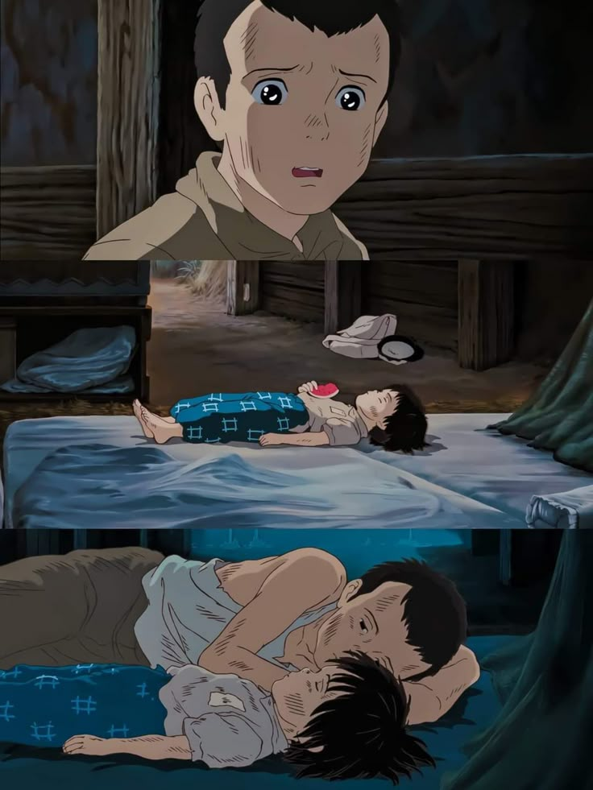
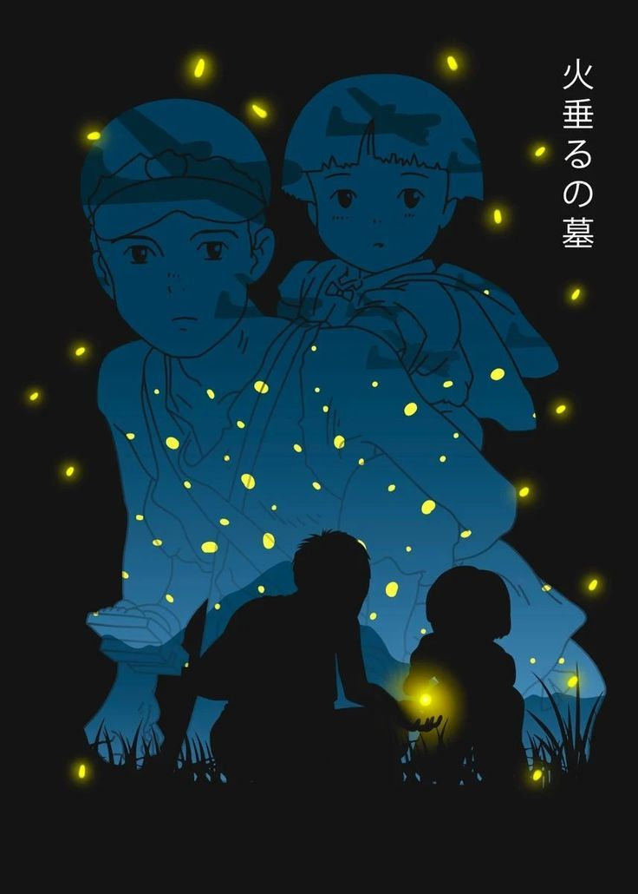
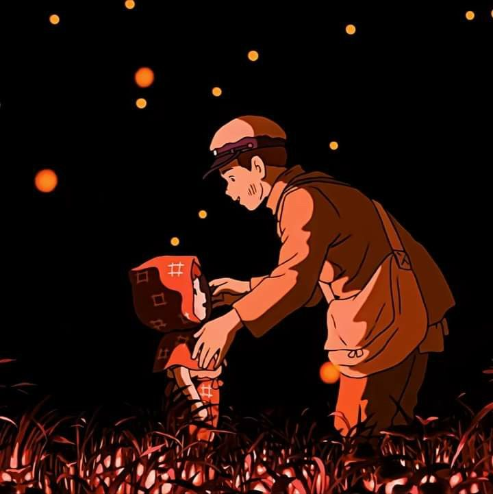

Esta película es un testimonio de la narración visual en su máxima expresión. Cada fotograma está cargado de emoción y simbolismo, invitando a la reflexión sobre la fragilidad de la vida y las consecuencias de la guerra.
En este análisis, desglosamos los elementos visuales y narrativos que hacen de La Tumba de las Luciérnagas una obra maestra del cine. Exploraremos cómo la dirección artística, la cinematografía y la banda sonora se combinan para contar una historia profundamente conmovedora.
La dirección de La Tumba de las Luciérnagas es un claro ejemplo de cómo el cine puede transmitir emociones complejas sin recurrir a diálogos excesivos. Cada escena está meticulosamente compuesta para capturar el dolor, la esperanza y la resiliencia de sus personajes.
El uso inteligente de la iluminación, el encuadre y los ángulos de cámara permite que las imágenes hablen por sí solas, ofreciendo al espectador una experiencia visual que invita a la introspección.
Cada fotograma de la película está impregnado de simbolismo, donde elementos visuales sutiles se transforman en potentes metáforas de la pérdida y la inocencia. Los contrastes entre la luz y la sombra refuerzan el mensaje de desesperanza y la belleza efímera de la vida.
El simbolismo visual no solo intensifica la carga emocional, sino que también invita a múltiples interpretaciones, enriqueciendo el debate y la apreciación de esta obra cinematográfica.
El aspecto técnico de la película es tan impresionante como su narrativa. La cinematografía se destaca por su manejo experto de la cámara, creando planos que transmiten la crudeza de la realidad y la sutileza de los sentimientos humanos.
La dirección de arte y la cuidadosa selección de la banda sonora trabajan en conjunto para intensificar la atmósfera de cada escena, haciendo que el espectador se sumerja por completo en la historia.
La Tumba de las Luciérnagas se erige como un testimonio del poder del cine para transmitir emociones profundas y reflexiones sobre la condición humana. A través de una dirección artística excepcional y una narrativa visual que trasciende las palabras, la película sigue siendo una obra inolvidable y un referente en el análisis cinematográfico.
Explora nuestro análisis detallado para descubrir cómo cada elemento se entrelaza y potencia la historia. Descubre cómo analizamos a detalle esta película aquí.
Categorías: Cine, Análisis